Lua
Lua is a scripting language made by PetroBras, Brazil. In RailCOMPLETE, Lua is used primarily as scripting language in formulas for RailwayObject properties. It is also used in the table tool for defining object filters and for specifying cell value content.
Lua Introduction
Lua is based on standard C. Composite objects are stored as hash tables (see LuaTable), ie, as key / value pairs. Tables can be accessed as an indexed table (array, multi-dimensional) or as a list. You can do index operations and amount operations on a table. Ternéperperator A ? B : C is approximated in LUA as A and B or C, which works as long as A do not evaluate to false or null.
a = 5
b = 4
return a + b == 9 and "It's true" or "No way"
-- Output: It's true
Logical values are false, true. All numbers are true. Empty list {} is nil. a = null resets a to undefined. Garbage collection is always active.
Streaking starts commenting on the line. Matching pairs with single, double, triple etc square brackets and double The line delimits a long comment (multiple lines):
-- This is a short comment
--[[
This is a long comment
and over multiple lines
--]]
Useful links
Expressions Tutorial
Expressions are evaluated in order to perform calculations which may assign values to variables or pass arguments to functions. Expressions are covered pretty well in section 2.5 of the Reference Manual.[1] Expressions are covered here for completeness and to offer more examples. We'll use the = expression shorthand notation for this page. The values can easily be assigned to a variable, e.g.,
x = 7
return x
-- Output: 7
Arithmetic expressions
Lua has the usual binary arithmetic operators.
2+3, 5-12, 2*7, 7/8
-- Output: Collection(4) {5, -7, 14, 0.875}
5*(2-8.3)/77.7+99.1
-- Output: 98.6945945945946
Unary negation:
-(-10), -(10)
-- Output: Collection(2) {10, -10}
Modulo (division remainder):
15%7, -4%3, 5.5%1
-- Output: Collection(3) {1, 2, 0.5}
Power of:
7^2, 107^0, 2^8
-- Output: Collection(3) {49, 1, 256}
Relational expressions
Relational operators are supplied which return the boolean values true or false.
- == equal to
- ~= not equal to
- < less than
- > greater than
- <= less than or equal to
- >= greater than or equal to
Examples:
1 == 1, 1 == 0
-- Output: Collection(2) {True, False}
1 ~= 1, 1 ~= 0
-- Output: Collection(2) {False, True}
3 < 7, 7 < 7, 8 < 7
-- Output: Collection(3) {True, False, False}
3 >= 7, 7 >= 7, 8 >= 7
-- Output: Collection(3) {False, True, True}
These also work on strings and other types.
"abc" < "def"
-- Output: True
"abc" > "def"
-- Output: False
"abc" == "abc"
-- Output: True
"abc" == "a".."bc"
-- Output: True
Objects will not be equal if the types are different or refer to different objects.
{} == "table"
-- Output: False
-- two different tables are created here
{} == {}
-- Output: False
t = {}
t2 = t
-- we're referencing the same table here
return t == t2
-- Output: True
Coercion does not work here, the types must be converted explicitly.
"10" == 10
-- Output: False
tonumber("10") == 10
-- Output: True
Logical operators
Lua provides the logical operators and, or and not. In Lua both nil and the boolean value false represent false in a logical expression. Anything that is not false (either nil or false) is true. There are more notes on the implications of this at the end of this page.
false==nil -- although they represent the same thing they are not equivalent
-- Output: False
true==false, true~=false
-- Output: Collection(2) {False, True}
does_this_exist -- test to see if variable "does_this_exist" exists. no, false.
-- Output: null
not
The keyword not inverts a logical expression value:
true, false, not true, not false
-- Output: Collection(4) {True, False, False, True}
not nil -- nil represents false
-- Output: True
not not true -- true is not not true!
-- Output: True
not "foo" -- anything not false or nil is true
-- Output: False
and
The binary operator and does not necessarily return a boolean value true or false to the logical expression x and y. In some languages the and operator returns a boolean dependent on the two inputs. Rather in Lua, it returns the first argument if its value is false or nil, and the second argument if the first argument is not false or nil. So, a boolean is only returned if the first argument is false or the second argument is a boolean.
false and true -- false is returned because it is the first argument
-- Output: False
nil and true -- as above
-- Output: null
nil and false
-- Output: null
nil and "hello", false and "hello"
-- null is removed from collection that is returned
-- Output: False
All of the above expressions return the first argument. All of the following expressions return the second argument, as the first is true.
true and false
-- Output: False
true and true
-- Output: True
1 and "hello", "hello" and "there"
-- Output: Collection(2) {hello, there}
true and nil
-- Output: null
As you can see the logical expressions are still evaluated correctly but we have some interesting behaviour because of the values returned.
or
The or binary operator also does not necessarily return a boolean value (see notes for and above). If the first argument is not false or nil it is returned, otherwise the second argument is returned. So, a boolean is only returned if the first argument is true or the second argument is a boolean.
true or false
-- Output: True
true or nil
-- Output: True
"hello" or "there", 1 or 0
-- Output: Collection(2) {hello, 1}
All of the above expressions return the first argument. All of the following expressions return the second argument, as the first is false or nil.
false or true
-- Output: True
nil or true
-- Output: True
nil or "hello"
-- Output: hello
This can be a very useful property. For example, setting default values in a function:
function foo(x)
local value = x or "default" -- if argument x is false or nil, value becomes "default"
return value, x
end
return foo()
-- Output: default
return foo(1)
-- Output: Collection(2) {1, 1}
return foo(true)
-- Output: Collection(2) {True, True}
return foo("hello")
-- Output: Collection(2) {hello, hello}
Ternary operators
Ternary operators [2] are a useful feature in C. e.g.
int value = x > 3 ? 1 : 0;
This behaviour can be partially emulated in Lua using the logical operators and and or. The C form: value = test ? x : y; roughly translates to the following Lua: value = test and x or y
E.g.
3>1 and 1 or 0
-- Output: 1
3<1 and 1 or 0
-- Output: 0
3<1 and "True" or "False" -- In RailCOMPLETE "False" is returned as false.
-- Output: False
3>1 and true or "false"
-- Output: True
This can be used for short hand to fill a hash:
t = {}
t[1] = 12
t[2] = 13
for i=1, 3 do
t[i] = (t[i] or 0) + 1
end
text =""
for k, v in pairs(t) do
text = text..k.." "..v.."\n"
end
return text
--[[
Output:
1 13
2 14
3 1
--]]
However, there is a caveat: This only works when the first return value is not nil or false.
3>1 and 1 or "False" -- works
-- Output: 1
3>1 and false or "oops" -- failed, should return false
-- Output: oops
3>1 and nil or "oops" -- failed, should return nil
-- Output: oops
Note on test expressions and nil
An important point to note is that the value 0 is not a false test condition in Lua. In some languages, for example C, a test of:
if (0)
printf("true");
else
printf("false");
would display "false". In Lua,
if 0 then
return "true"
else
return "false"
end
-- Output: true
prints "true"! You should use false, or nil in place of 0:
if false then return("true") else return("false") end
-- Output: false
if nil then return("true") else return("false") end
-- Output: false
Control Structure Tutorial
if statement
The if statement lets you run different code based on a condition:
if condition then
block
elseif condition2 then
block
elseif condition3 then
block
else
block
end
The if and elseif parts are checked in order, and once one of the conditions is true, it runs the block under it and skips to the end, ignoring any other elseif conditions after it. The else block is run if none of the conditions match. Finally, the elseif and else parts are optional.
n = 5
if n > 5 then return("greater than 5") else return("less than 5") end
-- Output: less than 5
n = 7
if n > 5 then return("greater than 5") else return("less than 5") end
-- Output: greater than 5
A more complex example:
n = 12
if n > 15 then
return("the number is > 15")
elseif n > 10 then
return("the number is > 10")
elseif n > 5 then
return("the number is > 5")
else
return("the number is <= 5")
end
-- Output: the number is > 10
Notice how just one of the messages is returned, even though more than one of the conditions are true: This is because once one matches, the if statement skips checking the other conditions.
Loops
While loop
while condition do
block
end
This runs the block over and over in a loop, but on each iteration, it first checks the condition, and if it's false, skips to the end, breaking the loop. If the condition is always false, the block will never be run.
text = ""
i = 1
while i <= 10 do
text = text..i.." "
i = i + 1
end
return text
-- Output: 1 2 3 4 5 6 7 8 9 10
Repeat loop
repeat
block
until condition
Same as the while loop, except the condition is inverted (breaks the loop when true), and it's checked after the first iteration, so the code is guaranteed to run at least once.
text = ""
i = 5
repeat
text = text..i.." "
i = i - 1
until i == 0
return text
-- Output: 5 4 3 2 1
Numeric for loop
for variable = start, stop, step do
block
end
Runs the block with variable first being equal to start, then keeps incrementing it step amount and running the block again until it's greater than stop. step can be omitted and will default to 1.
You can also make the step negative, and the loop will stop once the counter variable is less than the stop value.
text = ""
for i = 1, 5 do
text = text..i.." "
end
return text
-- Output: 1 2 3 4 5
text = ""
for i = 1, 100, 8 do
text = text..i.." "
end
return text
-- Output: 1 9 17 25 33 41 49 57 65 73 81 89 97
text = ""
for i = 0, 1, 0.25 do
text = text..i.." "
end
return text
-- Output: 0 0.25 0.5 0.75 1
text = ""
for i = 1, 3 do
for j = 1, i do
text = text..j.." "
end
end
return text
-- Output: 1 1 2 1 2 3
Kinds of formulas
Short Lua programs called formulas are used throughout RailCOMPLETE in various contexts. This section describes the various context and what RailCOMPLETE assumes about the formulas.
General
Formulas are typically evaluated in the context of a specific object, which means that the object's properties are available though variable names in the script. For example, the following formula applied to a railway object would evaluate to the concatenation of the object's name and code:
name .. code
And the following formula would evaluate to true or false depending on the distance between the alignment and the object in question:
math.abs(DistanceToAlignment) > 4.0
Filter formula
Filters are formulas which are evaluated on each object in a a set of objects to filter the set. For example, to select a set of objects to include in a table, a filter formula should return the true value when evaluated in the context of objects which are to be included in the set.
The following formula includes main signals with the home function in the set:
RCType == "Signal" and type == "main" and function == "home"
Map formula
Maps are formulas which are evaulated on an object to return a representative value for the object. For example, to present a column in a table, a map formula corresponding to the column is evaluated for each object in the table, and the value which the formula evaluated to is inserted in the table cell. Note that if the formula fails to produce a value, a default value is used instead. For tables, the default value is blank. For route export, the default value is a question mark.
The following formula presents the strings near or far depending on an objects distance from its alignment.
if math.abs(DistanceToAlignment) > 6.0 then
return "far"
else
return "near"
end
Filter-map
Filter-map formulas perform the function of the filter and the map at the same time. If the formula evaluates to a value, then the object is included in the set and the mapped value is used as representative value for the object. If the formula does not evaluate to a value, then the object is not included in the set. Formulas can produce no value by not executing a return statement, by executing a return statement with no argument, or by executing a return statement using the nil value argument.
The following formula presents all main signals by name:
if RCType == "Signal" and type == "main" then
return name
end
The following formula is equivalent:
if RCType == "Signal" and type == "main" then
return name
else
return nil
end
RailCOMPLETE Lua Functions
In this section, all available RailCOMPLETE lua functions with description are listed.
distance()
Calculates distance between two objects.
Returns the distance if a train can navigate between the two objects object A and object B
Syntax
Double distance(:RailwayObject objectA, RailwayObject objectB)
Parameters
objectA (optional)
Type: RailwayObject
Default value: source objectThe object to find the distance from
objectB
Type: RailwayObject
The object to find the distance to
Return value
Type: Double
The distance between the objects. If a train can't navigate between the two objects, the returned value is NaN
Examples
This code shows prints the distances to nearby placed railway objects. Source object is signal Ds.101.
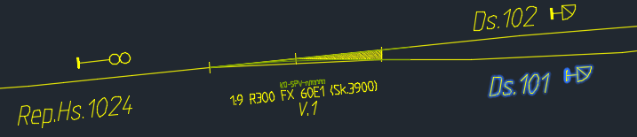
The following code returns a text containing name and distance to nearby objects.
-- Simple function that formats a number to show given number of decimals
function stringFormat(number, decimals)
return isnan(number) and "NaN"
or string.format("%."..decimals.."f", number)
end
-- Function that returns a text containing name
-- and distance to objects in collection "objects"
function printDistances(objects)
local text = ""
for i = 0, objects.Count - 1 do
distanceToObject = stringFormat(objects[i]:distance(), 2)
text = text.."Distance to "..objects[i].name..": "
..distanceToObject.."\n"
end
return text
end
return printDistances(getNearbyPointObjects2D(100))
--[[ Output:
Distance to Ds.102: NaN
Distance to V.1: 68.59
Distance to Rep.Hs.1024: 93.62
--]]
getBlockName()
Returns the name of the symbol block representing the object.
Syntax
String getBlockName(:RailwayObject object)
Parameters
object (optional)
Type: RailwayObject
Default value: source objectThe object that will return its block name.
Return value
Type: String
The name of the symbol block.
Examples
The source object is signal Hs.1024
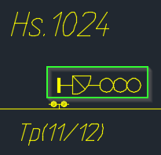
The following code returns the block name of the source object.
-- Get block name from source object
getBlockName()
-- output: NO-BN-2D-JBTSI-SIGNAL-20-HS3-DS
To get the block name of another object
-- Get block name of axle counter.
-- Use relations to get axle counter object
getBlockName(Relations["Er signal for tellepunkt"][0])
-- Can also be written
Relations["Er signal for tellepunkt"][0]:getBlockName()
-- Both will return the following output:
-- NO-BN-2D-JBTSI-TOGDETEKSJON-TELLEPUNKT-SENSOR
getBlockImage()
Returns a thumbnail image of the symbol block representing the object.
Image is default 190x120 pixels. The image is suitable for dark backgrounds. Image background is transparent.
Syntax
ImageSource getBlockImage(
:RailwayObject object,
Int width,
Boolean crop,
Boolean useActualSymbol)
Parameters
object (optional)
Type: RailwayObject
Default value: source objectThe object that will return its block image.
width (optional)
Type: Int
Default value: 190The pixel width of the block image. Height will scale uniformly when width is changed.
crop (optional)
Type: Boolean
Default value: falsetrue to crop image, default value is false
useActualSymbol (optional)
Type: Boolean
Default value: source objecttrue to get thumbnail of the actual block in drawing with orientation (ignoring alignment tangent). false to use symbol block from symbol library
Return value
Type: ImageSource
Thumbnail image of symbol block.
Examples
The source object is switch V.2
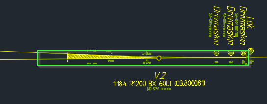
The following code returns a thumbnail image of the source object.
-- Get image of the symbol block of the source object.
getBlockImage()
-- Will return the following output:
-- First image below
-- Get a cropped image of the actual block of the source object.
getBlockImage(true, true)
-- Will return the following output:
-- Second image below
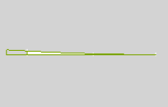
To get the block image of another block using relations .
-- Get smaller cropped image of the symbol block of the point machine.
Relations["Har sporvekseldrivmaskin"][0]:getBlockImage(true)
-- Will return the following output:
-- Image below
getInvertedBlockImage()
Returns a thumbnail image of the symbol block representing the object.
Image is default 190x120 pixels. The image is suitable for light backgrounds. Image background is transparent.
Returns an inverted version of getBlockImage().
Syntax
ImageSource getInvertedBlockImage(
:RailwayObject object,
Int width,
Boolean crop,
Boolean useActualSymbol)
Parameters
object (optional)
Type: RailwayObject
Default value: source objectThe object that will return its block image.
width (optional)
Type: Int
Default value: 190The pixel width of the block image. Height will scale uniformly when width is changed.
crop (optional)
Type: Boolean
Default value: falsetrue to crop image, default value is false
useActualSymbol (optional)
Type: Boolean
Default value: source objecttrue to get thumbnail of the actual block in drawing with orientation (ignoring alignment tangent). false to use symbol block from symbol library
Return value
Type: ImageSource
Thumbnail image of symbol block.
Examples
The source object is signal Hs.1024
The following code returns a thumbnail image of the source object.
-- Get image of the symbol block of the source object.
getInvertedBlockImage()
-- Will return the following output:
-- First image below
-- Get a cropped image of the actual block of the source object.
getInvertedBlockImage(true, true)
-- Will return the following output:
-- Second image below
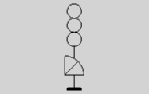 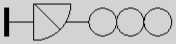
To get the block image of another block.
-- Get smaller cropped image (50 pixels width) of the symbol block of the axle counter.
Relations["Er signal for tellepunkt"][0]:getInvertedBlockImage(50, true)
-- Will return the following output:
-- Image below
get3DBlockImage()
Returns a screen shot of the object's 3D symbol block.
Image is default 500*200 pixels. Image background is transparent.
Syntax
ImageSource get3DBlockImage(
:RailwayObject object,
Int viewDirection,
Int width,
Boolean crop,
String style)
Parameters
object (optional)
Type: RailwayObject
Default value: source objectThe object that will return its 3D block image.
viewDirection (optional)
Type: Int
Default value: 1The direction from which the 3D block is view from. Imagine walking around the numpad looking at the objekt which is placed at key 5.
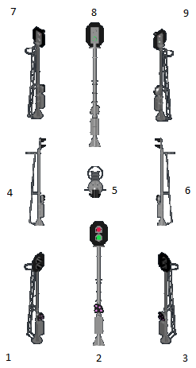
width (optional)
Type: Int
Default value: 500The pixel width of the block image. Height will scale uniformly when width is changed.
crop (optional)
Type: Boolean
Default value: falsetrue to crop image, default value is false
style (optional)
Type: String
Default value: "Realistic"Visual style of the 3D block, AutoCAD style types are:
Flat, FlatWithEdges, Gouraud, GouraudWithEdges, Wireframe2D, Wireframe3D, Hidden, Basic, Realistic, Conceptual, Custom, Dim, Brighten, Thicken, LinePattern, FacePattern, ColorChange, FaceOnly, EdgeOnly, DisplayOnly, JitterOff, OverhangOff, EdgeColorOff, ShadesOfGray, Sketchy, XRay, ShadedWithEdges, Shaded, EmptyStyle.
Return value
Type: ImageSource
Screen shot of the object's 3D symbol block.
Examples
The source object is speed sign 68A
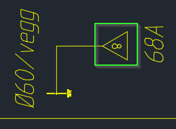
The following code returns a screen shot of the 3D symbol of the source object.
-- Get screen shot of the 3D symbol of the source object.
get3DBlockImage()
-- Will return the following output:
-- First image below
-- Get a cropped image of the 3D symbol of the source object viewed from the front.
get3DBlockImage(2, true)
-- Will return the following output:
-- Second image below
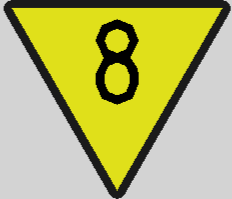
To get a screen shot of another block using attachment.
-- Get a screen shot (300 pixels width) of the 3D symbol
-- of the wall bracket with Conceptual view style.
attachment:get3DBlockImage(true, 1, 300, "Conceptual")
-- Will return the following output:
-- Image below
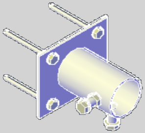
getObjectDescription()
Returns a short description of the current object.
The description is the variant name of the given block specified in the object type definitions.
Syntax
String getObjectDescription(:RailwayObject object)
Parameters
object (optional)
Type: RailwayObject
Default value: source objectThe object that will return its variant name.
Return value
Type: String
the variant name of the given block specified in the object type definitions.
Examples
The source object is signal Hs.1024
The following code returns the variant name of source object.
-- Getvariant name of the source object.
getObjectDescription()
-- Will return the following output:
-- 3-lys hovedsignal med dverg
getAlignmentInfo()
Returns alignment information at the position of the object
Retrieve information such as:
- Elevation
- Gradient
- Curve radius
- Cant
Syntax
AlignmentInfoValues getAlignmentInfo(:RailwayObject object, String alignmentID)
Parameters
object (optional)
Type: RailwayObject
Default value: source objectThe object whose position will will be used
alignmentID (optional)
Type: String
Default value: Source objects alignment IDThe ID of the alignment to get information from
Return value
Type: AlignmentInfoValues.
AlignmentInfoValues contains alignment information at a point in the alignment. The following information can be found in AlignmentInfoValues:
- Double DistanceToAlignment
- String AlignmentName
- Double Mileage
- Double Elevation
- Double Gradient
- Double CantDeficiency
- LandXML.clockwise CantRotation
- Double CurveRadius
- String CurveType
- LandXML.clockwise CurveRotation
- Double Cant
Examples
The source object is signal Ds.104
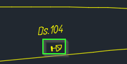
The following code returns a text containing various information about the source objects track and reference track.
-- Simple function that formats a number to show given number of decimals
function stringFormat(number, decimals)
return string.format("%."..decimals.."f", number)
end
-- Function that takes an AlignmentInfoValues object and returns some of its information
-- as a string.
function getAlignmentInfoString(alignmentInfo)
return "Name: "..alignmentInfo.AlignmentName.."\n"..
"Distance from track: ".. stringFormat(alignmentInfo.DistanceToAlignment, 2).."\n"
.."Elevation: "..stringFormat(alignmentInfo.Elevation, 2).."\n"
.."Curve type: "..alignmentInfo.CurveType..
-- Check if curve radius is infinite. If it is, don't diplay it.
(alignmentInfo.CurveRadius ~= math.huge and
"\nCurve radius: "..stringFormat(alignmentInfo.CurveRadius, 2) or "").."\n"
.."Cant: "..alignmentInfo.Cant
end
-- Get the alignment information for source objects track
trackInfo = getAlignmentInfo()
-- Get the alignment information for source objects reference track
refTrackInfo = getAlignmentInfo(ReferenceAlignment.id)
return getAlignmentInfoString(trackInfo).."\n\n"..getAlignmentInfoString(refTrackInfo)
--[[
Will return the output:
Name: ARNA-HP_SPOR 20-0
Distance from track: -3.50
Elevation: 0.00
Curve type: Straight
Cant: 0
Name: SP1-ULRIKKEN-1
Distance from track: 19.98
Elevation: 0.00
Curve type: clothoid
Curve radius: 1220.82
Cant: 30
--]]
getClosestAlignments()
Returns alignments sorted by proximity
Retrieve a collection of all alignments in the drawing. The first alignment in the collection will be the one closest to the object.
Syntax
ObservableCollection<RailwayObject> getClosestAlignments(:RailwayObject object)
Parameters
object (optional)
Type: RailwayObject
Default value: source objectThe object that will use its position to determine the closest alignments
Return value
Type: ObservableCollection<RailwayObject>
A collection of alignments sorted on proximity
Examples
The source object is signal Ds.104
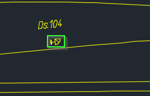
The following code returns a text containing various information about the source objects track and reference track.
-- Simple function that formats a number to show given number of decimals
function stringFormat(number, decimals)
return string.format("%."..decimals.."f", number)
end
-- Function that iterates the first given number of closest alignments
-- and returns a string containing distance and name of those alignments.
function closestAlignmentsInfo(closest, number)
number = number < closest.Count and number or closest.Count
infoString = "The "..number.." closest alignments of "..name.."\n"
for i = 0, number - 1 do
infoString = infoString.. "\nDistance: "
..stringFormat(math.abs(getAlignmentInfo(closest[i].id).Distance), 2)
.." "..closest[i].Name
end
return infoString
end
return closestAlignmentsInfo(getClosestAlignments(), 4)
--[[
Output will be:
The 4 closest alignments of Ds.104
Distance: 3.50 ARNA-HP_SPOR 20-0
Distance: 19.98 SP1-ULRIKKEN-1
Distance: 20.13 ARNA-HP_SPOR 2-0
Distance: 24.83 SP3-ULRIKKEN
--]]
getNearbyPointObjects2D()
Returns point objects closer than a given distance of the object.
Objects are sorted by proximity and will not include the source object. Distance between objects are measured using all objects positions projected to the XY-Plane.
Syntax
ObservableCollection<RailwayObject> getNearbyPointObjects2D(
:RailwayObject object,
Double distance,
String type)
Parameters
object (optional)
Type: RailwayObject
Default value: source objectThe object whose nearby objects will be returned
distance
Type: Double
The distance from the source object to return objects 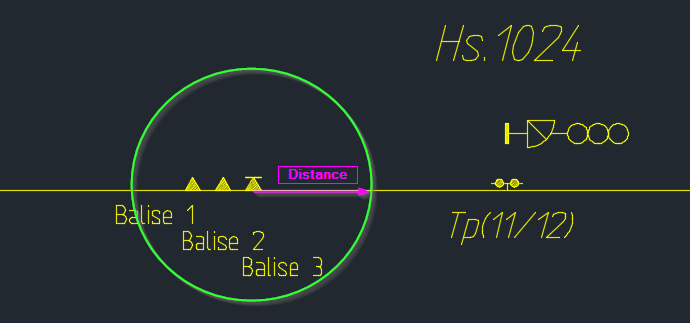
type (optional)
Type: String
Default value: ""If specified, only return objects of the given object type
Return value
Type: ObservableCollection<RailwayObject>
A collection of nearby objects sorted by proximity
Examples
The source object is balise Balise 3
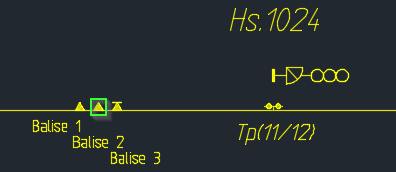
The following code returns the closest switchable balise inside a radius of 100 meters using filter().
--Get balises inside a radius of 100
nearby = getNearbyPointObjects2D(100, "SA-ATB Balise")
return nearby:filter(function (x) return x.Switchable end)[0].Name
-- Output: Balise 3
Returns point objects closer than a given distance of the object.
Objects are sorted by proximity. This function includes difference in Z-values when locating nearby point objects
This function uses the same syntax as getNearbyPointObjects2D().
getFoulingPoints()
Calculates the fouling points for switch objects
Syntax
ObservableCollection<FoulingPointResult> getFoulingPoints(:RailwayObject switchObject)
Parameters
switchObject (optional)
Type: RailwayObject
Default value: source objectThe switch whose fouling points will be returned
Return value
Type: ObservableCollection<FoulingPointResult>
A collection of fouling points.
Examples
The source object is switch V.1
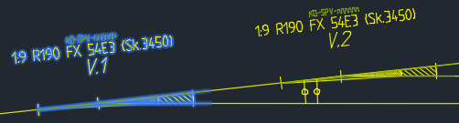
The following code will return text with fouling point information.
-- Simple function that formats a number to show given number of decimals
function stringFormat(number, decimals)
return string.format("%."..decimals.."f", number)
end
-- Function that return fouling point information from a list
-- of fouling points.
function fpInfo (foulingPoints)
text = ""
for i = 0, foulingPoints.count - 1 do
fp = foulingPoints[i]
trunkTrack = fp.Trunk
branchTrack = fp.Branch
text = text.."\nFouling distance: "..stringFormat(fp.FoulingDistance,2).."\n"
.." Trunk track: "..trunkTrack.AlignmentRef.Name.."\n"
.." Mileage: "..stringFormat(trunkTrack.Mileage,2).."\n"
.." Branch track: "..branchTrack.AlignmentRef.Name.."\n"
.." Mileage: "..stringFormat(branchTrack.Mileage,2).."\n"
end
return text
end
return fpInfo(getFoulingPoints())
--[[
Will produce the following output
Fouling distance: 4.00
Trunk track: ARNA-HP_SPOR 6-1
Mileage: 462055.16
Branch track: ARNA-HP_SPOR 4
Mileage: 462053.16
Fouling distance: 4.13
Trunk track: ARNA-HP_SPOR 5
Mileage: 462051.52
Branch track: ARNA-HP_SPOR 4
Mileage: 462051.08
--]]
getObjectFromId()
Get railway object using id
Syntax
RailwayObject getObjectFromId(String id)
Parameters
id
Type: String
The id of the object that will be returned
Return value
Type: RailwayObject
A railway object
Examples
This code demonstrates how to retrieve a railway object from an id
getObjectFromId("86a09ad7-a949-4bcc-a951-ac52815f5c0d").id
--Output will be: 86a09ad7-a949-4bcc-a951-ac52815f5c0d
getCollectionLength()
Returns the length of a collection If the collection is null, 0 will be returned.
Syntax
Int getCollectionLength(:Collection collection)
Parameters
collection
Type: Collection
A collection of any object
Return value
Type: Int
The length of the collection
Examples
This code demonstrates how to get the length of a collection. Source object is balise Balise3
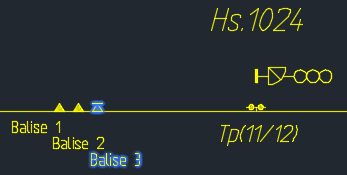
-- Get the number of objects inside a 50 meter radius
getNearbyPointObjects2D(50):getCollectionLength()
--Output will be: 4
filter()
Filters a collection with a given function.
Returns a new collection of objects that all returned true in the given function.
Syntax
Collection<Object> filter(
:Collection<Object> collection,
LuaFunction function,
Object functionParameter ..)
Parameters
collection
Type: Collection<Object>
A collection of any object
function
Type: LuaFunction
The function that filters the objects in the collection. the filter function must return true for an object to pass.
functionParameter (optional)
Type: Object Default value: nil
Parameters for the filter function. 0 - infinite parameters can be included
Return value
Type: Collection<Object>
A new collection of objects that satisfy the conditions in the filter function
Examples
This code shows how filter can be used to find the intersection of two collections. Source object is balise Balise3
The following code returns a text containing various information about the source objects track and reference track.
-- Function that returns text containing the names of
-- railway objects in a collection.
function printItemsInList(list)
text = ""
for i = 0, list.Count - 1 do
text = text..list[i].Name.."\n"
end
return text
end
-- Function that checks if railway object "x" is in collection "list"
function contains(x, list)
for i = 0, list.Count - 1 do
if x.id == list[i].id then
return true
end
end
return false
end
-- Get objects inside a 50 meter radius
nearby = getNearbyPointObjects2D(50)
-- Get balise objects inside a 50 meter radius
nearbyBalises = getNearbyPointObjects2D(50, "SA-ATB Balise")
-- print the intersection of the two collections.
return printItemsInList(nearby:filter(contains, nearbyBalises))
--[[
Will return output
Balise 2
Balise 1
--]]
isObjectReachableByPath()
Checks if a given object is reachable from the inspected object by a path.
Returns true if a train can navigate between the two objects object A and object B.
Syntax
Boolean isObjectReachableByPath(:RailwayObject objectA, RailwayObject objectB)
Parameters
objectA (optional)
Type: RailwayObject
Default value: source objectThe object that represent the start of the path
objectB
Type: RailwayObject
The object that represent the end of the path
Return value
Type: Boolean
true if there exist a valid pathe between object A and object B. Otherwise false
Examples
This code shows how to check if railway objects can be reached by a path. Source object is signal Ds.101.
The following code returns a text containing various information about the source objects track and reference track.
-- Function that returns text containing the names of
-- railway objects in a collection.
function printItemsInList(list)
text = ""
for i = 0, list.Count - 1 do
text = text..list[i].Name.."\n"
end
return text
end
-- Get nearby signals
nearbySignals = getNearbyPointObjects2D(150, "SA-SIG Signal")
-- Get nearby signals reachable by path
nearbyReachableSignals =
nearbySignals:filter(function (x) return isObjectReachableByPath(x) end)
return "Nearby signals:\n"..printItemsInList(nearbySignals)..
"\nNearby signals reachable by path:\n"..
printItemsInList(nearbyReachableSignals)
--[[
Output:
Nearby signals:
Ds.102
Rep.Hs.1024
Nearby signals reachable by path:
Rep.Hs.1024
--]]
getUpObject()
Gets the next object on the alignment in the up direction.
If an object type is specified, returns the next object of that type.
Syntax
RailwayObject getUpObject(:RailwayObject object, String type)
Parameters
object (optional)
Type: RailwayObject
Default value: source objectThe object to get up object from
type (optional)
Type: String
Default value: ""If type is specified the next object in up direction of that type is returned
Return value
Type: RailwayObject
The next object on the alignment in the up direction
Examples
This code shows a balise model check formula. The code checks the distance to the next balise and returns a message along with a symbol.
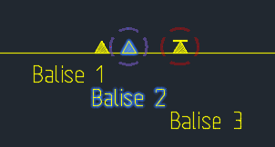
The following code returns a text containing various information about the source objects track and reference track.
-- Get next balise
nextBalise = getUpObject("SA-ATB Balise")
if (nextBalise == nil) then
return "Ingen baliser i kjørbar forbindelse i stigende km", _ok
end
-- Get distance to next balise
dist = distance(nextBalise)
distOut = string.format("%.3f", dist)
-- Check distance up against rules to return correct message
if (dist < 2.35 ) then
return distOut..
": Ugyldig, balisenes magnetfelt kan flyte sammen – øk avstand", _error
elseif (dist >= 2.35 and dist < 2.8) then
return distOut..
": Tillatt, men utenfor anbefalt byggetoleranse – øk avstand", _warning
elseif (dist >= 2.8 and dist < 3.2) then
return distOut..
": OK – toget vil med god margin plassere balisene i samme gruppe", _ok
elseif (dist >= 3.2 and dist < 3.5) then
return distOut..
": Tillatt, men utenfor anbefalt byggetoleranse – senk avstand", _warning
elseif (dist >= 3.5 and dist < 10.5) then
return distOut..
": Ugyldig – toget kan ikke entydig avgjøre balisenes gruppetilhørighet", _error
elseif (dist >= 10.5 and dist < 11.8) then
return distOut..
": Tillatt, men utenfor anbefalt byggetoleranse – øk avstand", _warning
elseif (dist > 11.8) then
return distOut..
": OK – toget vil med god margin plassere balisene i ulike grupper", _ok
else
return "Feil i beregning av avstand", _warning
end
--[[ Output will be:
(Error) 5.679: Ugyldig – toget kan ikke entydig avgjøre balisenes gruppetilhørighet
--]]
getDownObject()
Gets the next object on the alignment in the down direction.
If an object type is specified, returns the next object of that type.
For more information see getUpObject().
getPropertyValue()
Gets the value of a property without evaluating formula in property
Syntax
Object getPropertyValue(:RailwayObject object, String property)
Parameters
object (optional)
Type: RailwayObject
Default value: source objectThe object to get property value from
property
Type: String
The name of the property to get value from
Return value
Type: Object
The value of the property
Examples
Normally when getting a property value, if the value is evaluated from a formula, this formula is evaluated to give the most up to date result. This code shows how to get the value of a property without evaluating the formula the property value is evaluated from.

-- Get the value of the attachments property "name"
Attachment:getPropertyValue("name")
-- Output is: Ø60/vegg
getZeros()
Returns a list of zeros of a user specified function of one variable.
Syntax
List<double> getZeros(
LuaFunction formula,
{LuaTable interval,
Double tolerance,
Double decimals,
Double timeLimit,
Double rootDistance})
Parameters
formula
Type: LuaFunction
The function to find zeros in
interval (optional)
Type: LuaTable
Default value: {-10,10}The interval in which to search for zeros
tolerance (optional)
Type: Double
Default value: 0.0001Tolerance of zeros to be returned. F(x) < tolerance
decimals (optional)
Type: Double
Default value: Given by tolerance. The lower tolerance the more decimals.Specifies rounding of the answers
timeLimit (optional) Obsolete
Type: Double
Default value: 10Time in seconds before the function times out.
rootDistance (optional)
Type: Double
Default value: interval length divided by 10Expected distance between zeros.
Return value
Type: List<Double>
List of identified zeros of the input function.
Examples
Find zeros of "ax^2 + bx + c", where a = 1, b = 0, c = -2. The following code returns a list of zeros of the above expression.
function myFunction(x)
local a = 1
local b = 0
local c = -2
return a*x^2 + b*x + c
end
return getZeros(myFunction, {tolerance = 0.000001, interval = {-5,5}})
-- Will return the following output:
-- Collection(2){-1.414214, 1.414214}
RailCOMPLETE classes
RailwayObject
Relations
AlignmentInfoValues
FoulingPointResult
Symbol
LuaTable
LuaFunction
Lua Tips and Tricks
Display Name VS Property
Some properties also have a display name. As shown below, the Model3DName property has a property display name 3D Model Name (in the properties window).
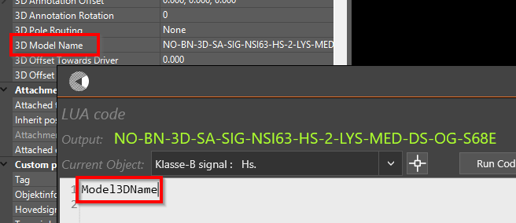
The value for Model3DName can also be found using the fromDisplayName function.
-- Using fromDisplayName to get Model3DName.
fromDisplayName("3D Model Name")
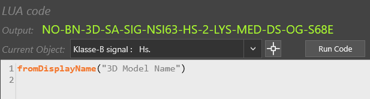